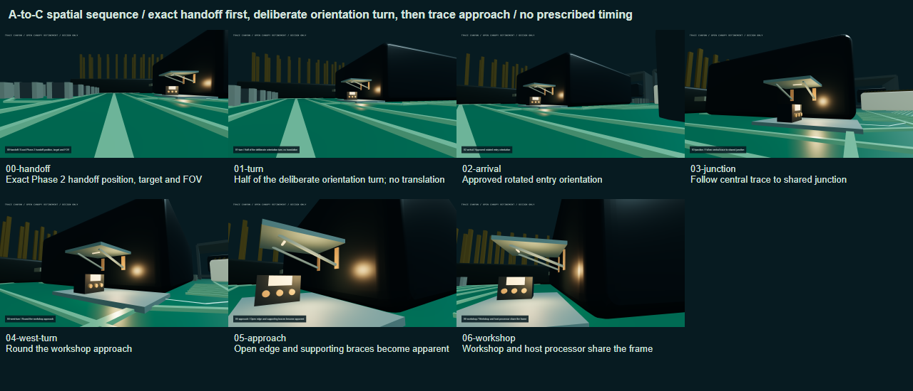
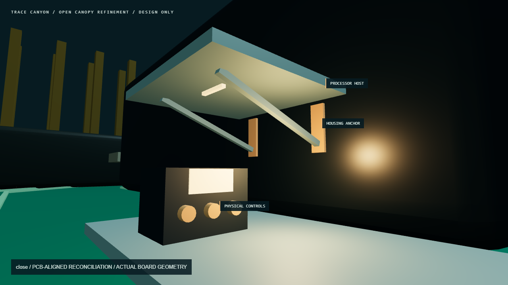
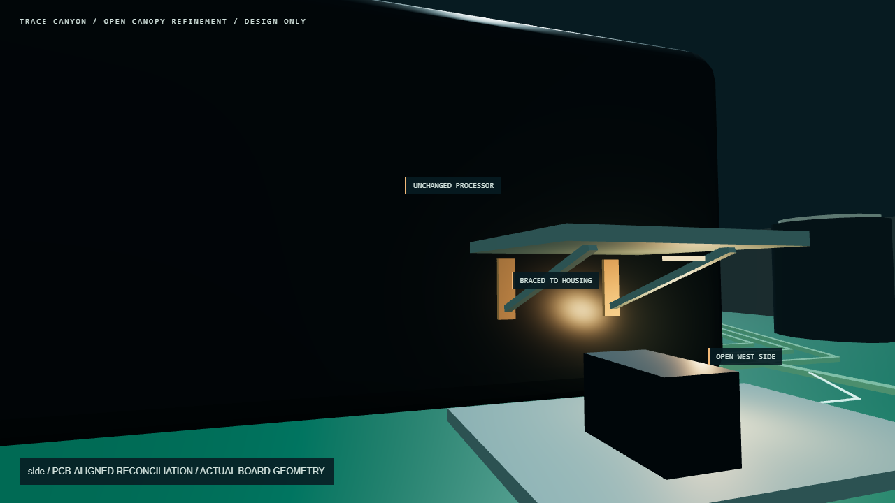

Focused canopy revision. Spatial baseline 446f8a7, physical board, notebook and routes are preserved. Review overlays are not proposed interface labels.

A-to-C sequence. The first view preserves the Phase 2 handoff pose. Orientation changes before translation. These are spatial samples with no prescribed movement speed or mandatory itinerary.

Close view. Full-height walls removed. The short canopy is braced directly to the original processor housing; the controls remain at their baseline positions.

Side view. The processor edge, upper silhouette and lid remain visible above the tiny attached workshop. No processor geometry is moved, carved or lifted.